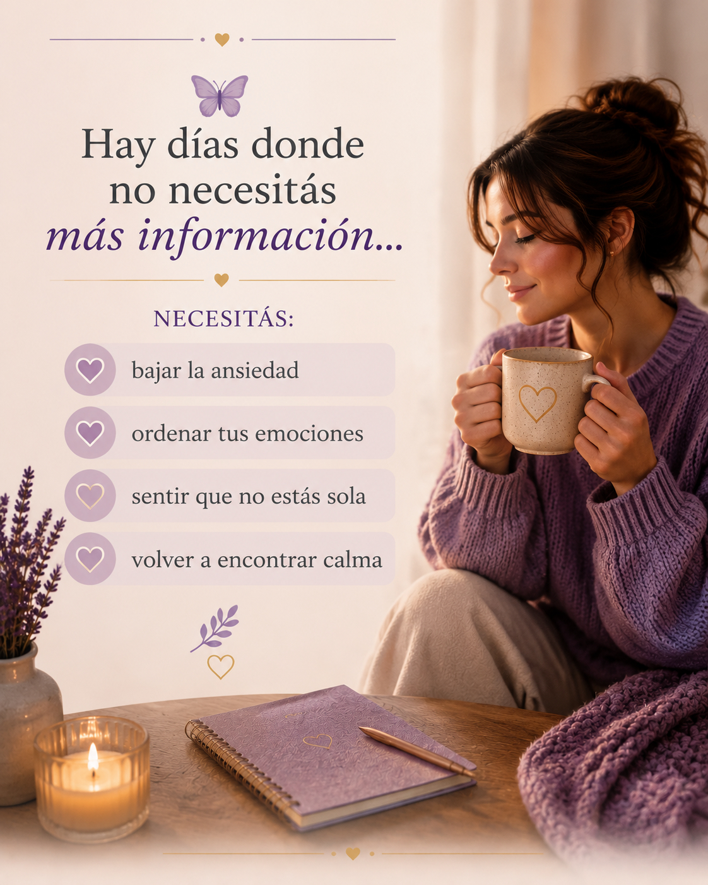
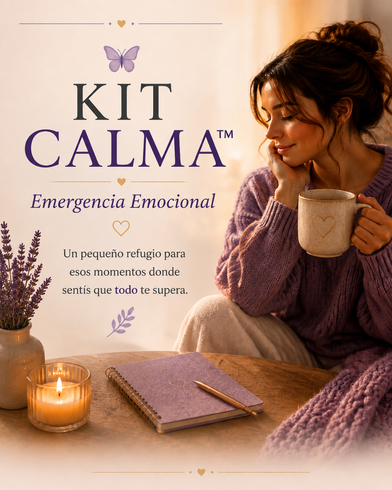
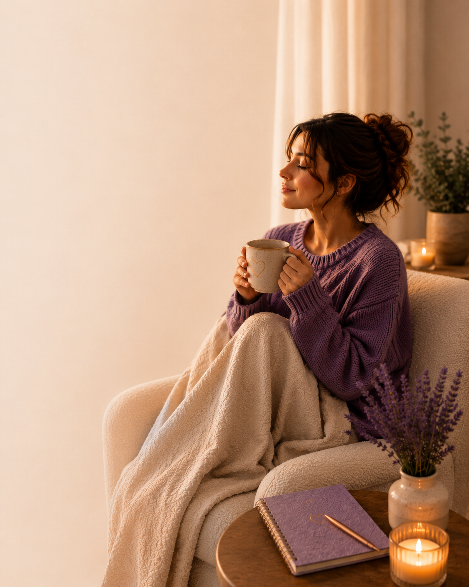

Tarjetas de calma
Pequeñas herramientas para esos momentos difíciles.
Un pequeño refugio para esos momentos donde sentís que todo te supera. Herramientas simples para volver a respirar y acompañarte con más calma.


Para esos momentos donde sentís que todo te supera, necesitás bajar un cambio y volver a encontrar un poco de calma.
Una propuesta pensada para acompañarte en esos momentos en los que necesitás bajar el ruido y volver a vos.
Recursos simples y amorosos pensados para acompañarte cuando más los necesitás.
Pequeñas herramientas para esos momentos difíciles.
Frases para acompañar lo que estás sintiendo.
Recursos sencillos para usar cuando los necesitás.
Momentos para bajar el ritmo y volver a respirar.
A veces necesitás algo más simple: bajar la ansiedad, ordenar tus emociones, sentir que no estás sola y volver a encontrar calma.

Porque tu bienestar también es importante.
Y cuidar de vos es el primer pasoEste kit es para vos. Para acompañarte con calma y recordarte que no tenés que resolver todo de una sola vez.
Aunque hoy no puedas hacer todo el camino...
Podés empezar con un pequeño paso.